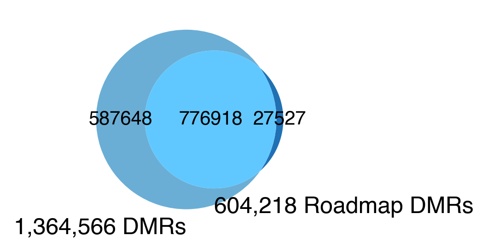
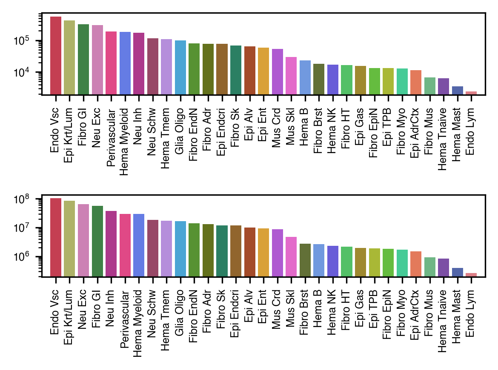
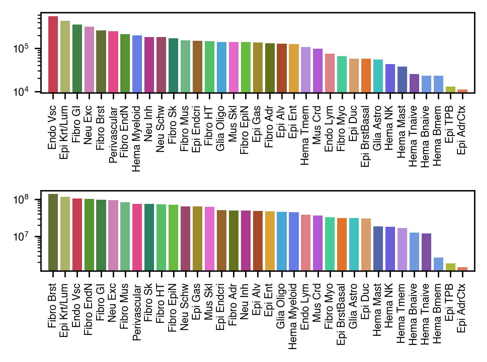
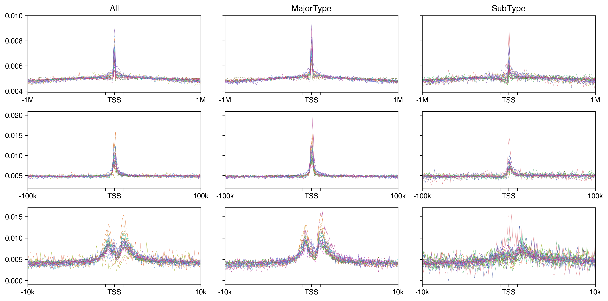
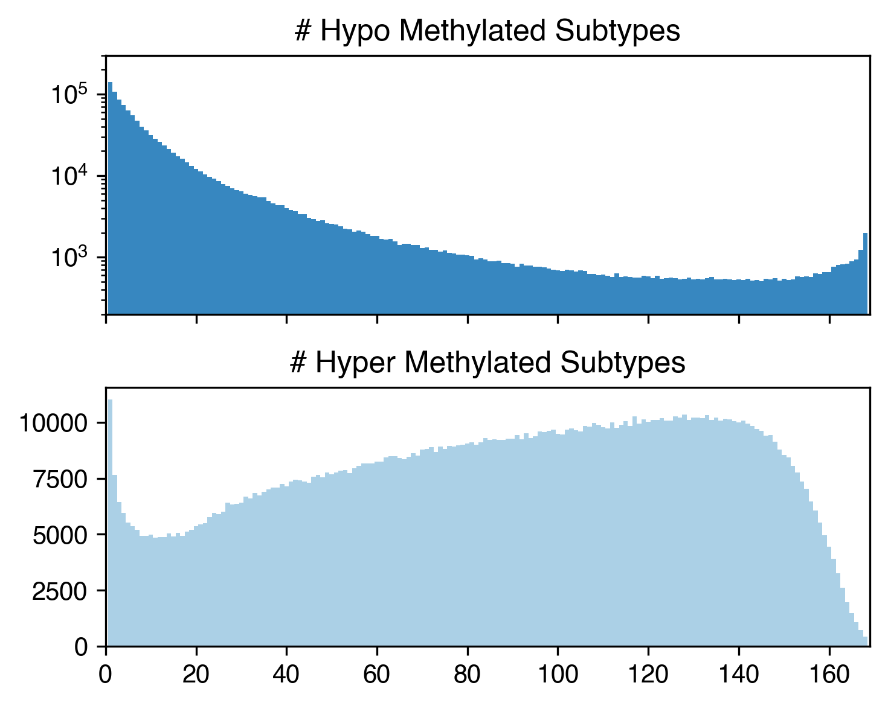
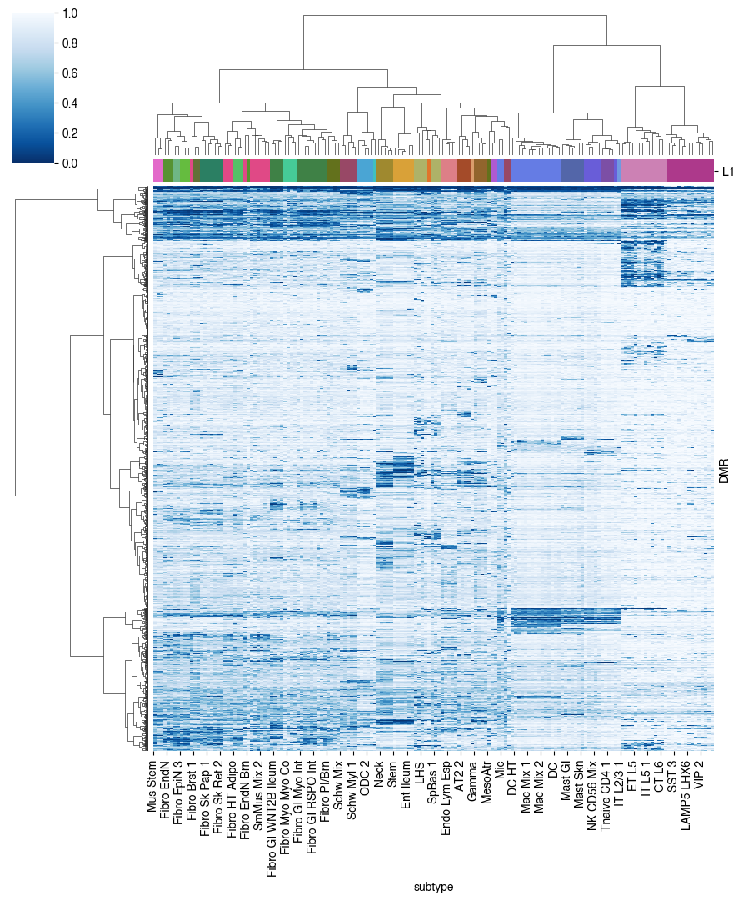

4. DMR stats#
Part of the Fig. 2 chapter — see it for the panel-by-panel map. The first code cell sets ENTEX_ROOT and activates the no-overwrite guard (see the Reproduction guide). Outputs shown are the author’s original run.
📥 Required input files#
This notebook reads the following files (paths resolve from ENTEX_ROOT/REF_ROOT; the setup cell sets them). See the chapter’s inputs.md for RAW-vs-derived tags.
f'{indir}L1color.tsv'· metadata: colorf'{REF_ROOT}/hg38/gencode/v30/gencode.v30.annotation.gene.flat.tsv.gz'· ref: gencodef'{indir}scRNA/Teichmann2022/Myeloid.h5ad'· scRNA/exprf'{outdir}{ct}_{mode}dmr_center.bed'· DMRf'{outdir}tss_{mode}dmr_dist_{s}.hdf'· DMRf'{indir}merged_allc/subtype1k.mcds'· sc/pseudobulk mC (allc)f'{indir}subtype_meta.tsv'· metadataf'{outdir}subtype_dmr.mcds'· mC matrix (mcds)f'{indir}merged_allc/subtype_globalCG.csv.gz'· sc/pseudobulk mC (allc)f'{indir}DMR/majortype-subtype/{ct}_dmr'· DMRf'{indir}DMR/majortype-subtype/{mt}_dmr'· DMR
# === Reproduction setup — edit ENTEX_ROOT / REF_ROOT for your machine ===
import os, sys
ENTEX_ROOT = os.environ.get('ENTEX_ROOT', '/large_storage/zhoulab/zhoujt/project/ENTEx')
REF_ROOT = os.environ.get('REF_ROOT', '/large_storage/zhoulab/ref')
BOOK_ROOT = os.environ.get('BOOK_ROOT', f'{ENTEX_ROOT}/analysis/HumanCellEpigenomeAtlas')
sys.path.insert(0, BOOK_ROOT)
os.chdir(f'{ENTEX_ROOT}/analysis') # original working directory
import repro_guard # no-overwrite guard (default: skip existing)
import os
import numpy as np
import pandas as pd
from glob import glob
from scipy.sparse import csr_matrix
from scipy.stats import zscore
from concurrent.futures import ProcessPoolExecutor, as_completed
import anndata
from ALLCools.mcds import MCDS, RegionDS
from ALLCools.clustering import *
from ALLCools.plot import *
import seaborn as sns
import matplotlib as mpl
import matplotlib.pyplot as plt
mpl.style.use('default')
mpl.rcParams['pdf.fonttype'] = 42
mpl.rcParams['ps.fonttype'] = 42
mpl.rcParams['font.family'] = 'sans-serif'
mpl.rcParams['font.sans-serif'] = 'Helvetica'
import warnings
warnings.filterwarnings("ignore")
indir = f'{ENTEX_ROOT}/'
outdir = f'{indir}analysis/DMR/'
L1_meta = pd.read_csv(f'{indir}L1color.tsv', sep='\t', header=0, index_col=0)
# L1_meta = L1_meta.drop(['c35', 'c36'], axis=0)
L1_meta = L1_meta.drop(['c7'], axis=0)
L1_annot = L1_meta['L1_abbr'].to_dict()
L1_color = L1_meta['color'].to_dict()
L1_color.update({L1_annot[k]: L1_color[k] for k in L1_annot if k in L1_color}) # also key by name
import cooler
chrom_size_path = f'{REF_ROOT}/hg38/fasta/hg38.main.chrom.sizes'
chrom_sizes = cooler.read_chromsizes(chrom_size_path, all_names=True)
chrom_sizes = chrom_sizes.iloc[:22]
## write majortype DMR
ndms = 4
ngroup = 36
dmr_dir = f'{indir}DMR/majortype/{ngroup}groups'
out_dir = f'{indir}analysis/DMR/overlap_atac/majortype_{ngroup}groups/'
dmr_ds = RegionDS.open(dmr_dir, region_dim='dmr')
dmr = dmr_ds[['dmr_chrom', 'dmr_start', 'dmr_end', 'dmr_ndms']].to_pandas()
dmr[['dmr_start', 'dmr_end', 'dmr_ndms']] = dmr[['dmr_start', 'dmr_end', 'dmr_ndms']].astype(int)
seldmr = (dmr['dmr_ndms']>=ndms) & (dmr['dmr_chrom'].isin(chrom_sizes.index))
dmr_ds = dmr_ds.sel({'dmr':dmr.index[seldmr]})
dmr = dmr.loc[seldmr]
dmr_state = dmr_ds['dmr_state'].to_pandas().T
seldmr = (dmr_state.drop(['c1','c2','c3','c9','c22','c35'], axis=1)==-1).sum(axis=1)>0
print(seldmr.sum(), seldmr.shape[0])
dmr = dmr.loc[seldmr]
dmr_tmp = dmr.reset_index()[['dmr_chrom', 'dmr_start', 'dmr_end', 'dmr', 'dmr_ndms']]
dmr_tmp.sort_values(by=['dmr_chrom', 'dmr_start']).to_csv(f'{indir}analysis/DMR/overlap_atac/majortype_36groups/majortype_dms4.bed', sep='\t', header=False, index=False)
## write subtype DMR
indir=/large_storage/zhoulab/zhoujt/project/ENTEx
dmr_dir=${indir}/DMR/majortype-subtype
out_dir=${indir}/analysis/DMR/overlap_atac/majortype_36groups
for i in `seq 0 35`; do awk -v i=$i '{printf("%s\t%d\t%d\tc%d\n",$1,$2,$3,i)}' ${dmr_dir}/c${i}_dmr.bed; done | sort -k1,1 -k2,2n | bedtools merge -i - -c 4 -o distinct > ${outdir}/subtype_dms2.bed
indir=/large_storage/zhoulab/zhoujt/project/ENTEx
dmr_dir=${indir}/analysis/DMR
out_dir=${dmr_dir}/overlap_atac/majortype_36groups
bedtools intersect -wa -a ${dmr_dir}/merged_dmr.bed -b ${out_dir}/subtype_dms2.bed | sort -k1,1 -k2,2n -u | bedtools intersect -wa -a - -b ${out_dir}/majortype_dms4.bed | sort -k1,1 -k2,2n -u | wc -l
bedtools intersect -wa -a ${dmr_dir}/merged_dmr.bed -b ${out_dir}/subtype_dms2.bed | sort -k1,1 -k2,2n -u | wc -l
bedtools intersect -wa -a ${dmr_dir}/merged_dmr.bed -b ${out_dir}/majortype_dms4.bed | sort -k1,1 -k2,2n -u | wc -l
wc -l ${dmr_dir}/merged_dmr.bed
print([535606/1364566, (706191-535606)/1364566, (1193981-535606)/1364566])
[0.39251014608307694, 0.1250104428807401, 0.4824794110361829]
indir=/large_storage/zhoulab/zhoujt/project/ENTEx/
bulk_dir=${indir}bulk_mC/Schultz2015
out_dir=${indir}analysis/DMR
sort -m -k1,1 -k2,2n $(ls ${out_dir}/overlap_atac/majortype_36groups/*_merged.bed) | bedtools merge -i - > ${out_dir}/merged_dmr.bed
bedtools closest -a ${bulk_dir}/DMR_hg38.autosomal.bed -b ${out_dir}/merged_dmr.bed -d | awk '$7<1000' | sort -k1,1 -k2,2n -u | wc -l
bedtools closest -b ${bulk_dir}/DMR_hg38.autosomal.bed -a ${out_dir}/merged_dmr.bed -d | awk '$7<1000' | sort -k1,1 -k2,2n -u | wc -l
wc -l ${bulk_dir}/DMR_hg38.autosomal.bed ${out_dir}/merged_dmr.bed
from matplotlib_venn import venn2
colors = list(sns.color_palette('Blues', 3))
# print(583584/604218, 782349/1434606)
print(576691/604218, 776918/1364566)
0.9658500739799212 0.545340671933618
0.9544419398296641 0.5693517206203291
1364566-776918
587648
fig, ax = plt.subplots(figsize=(4,2), dpi=300)
venn2(subsets=(1364566-776918, 604218-576691, 776918),
set_labels=('1,364,566 DMRs', '604,218 Roadmap DMRs'),
alpha=1.0,
set_colors=(colors[1], colors[2]),
ax=ax)
fig.savefig(f'{outdir}DMR_roadmapDMR_overlap_venn.pdf', transparent=True)

bedtools closest -a /large_storage/zhoulab/zhoujt/project/ENTEx/analysis/DMR/merged_dmr.bed -b /large_storage/zhoulab/ref/hg38/gencode/v30/gencode.v30.tss.bed -d | awk '$10>2000' | wc -l
1249253/1364566
0.9154947433836106
subtype DMR#
dmr_file_list = np.sort(glob(f'{indir}DMR/majortype-subtype/*_dmr/dmr.bed'))
print(len(dmr_file_list))
31
import os
dmr_len = []
dmr_stats = []
for ct in L1_meta.index:
dmr_file_path = f'{indir}DMR/majortype-subtype/{ct}_dmr/dmr.bed'
if os.path.isfile(dmr_file_path):
dmr = pd.read_csv(dmr_file_path, names=['chrom', 'start', 'end', 'dmr_id'],
header=None, index_col=3, sep='\t')
tmp = pd.DataFrame(dmr['end'] - dmr['start'], columns=['length'])
tmp['L1'] = ct
dmr_len.append(tmp)
dmr_stats.append([ct, tmp.shape[0], tmp['length'].sum()])
dmr_len = pd.concat(dmr_len, axis=0)
dmr_stats = pd.DataFrame(dmr_stats, columns=['L1', '#DMR', 'length']).set_index('L1')
fig, axes = plt.subplots(2, 1, figsize=(4, 3), dpi=300)
# ax.spines['bottom'].set_position('zero')
# ax.spines['right'].set_visible(False)
# ax.spines['top'].set_visible(False)
xticks = np.arange(dmr_stats.shape[0])
for i,xx in enumerate(['#DMR', 'length']):
ax = axes[i]
leg_order = dmr_stats.sort_values(xx).index[::-1]
tmp = dmr_stats.loc[leg_order]
ax.bar(x=np.arange(dmr_stats.shape[0]), height=tmp[xx], color=tmp.index.map(L1_color), width=0.8)
ax.set_xticks(xticks)
ax.set_xticklabels(tmp.index.map(L1_annot), fontsize=6, rotation=90)
ax.set_yscale('log')
ax.set_xlim([-1, dmr_stats.shape[0]])
ax.set_yticklabels(ax.get_yticklabels(), fontsize=6)
fig.tight_layout()

merged DMR per majortype#
dmr_file_list = np.sort(glob(f'{indir}analysis/DMR/overlap_atac/majortype_36groups/*_merged.bed'))
print(len(dmr_file_list))
37
import os
dmr_len = []
dmr_stats = []
for ct in L1_meta.index:
dmr_file_path = f'{indir}analysis/DMR/overlap_atac/majortype_36groups/{ct}_merged.bed'
if os.path.isfile(dmr_file_path):
dmr = pd.read_csv(dmr_file_path, names=['chrom', 'start', 'end', 'dmr_id'],
header=None, index_col=3, sep='\t')
if dmr.shape[0]>0:
tmp = pd.DataFrame(dmr['end'] - dmr['start'], columns=['length'])
tmp['L1'] = ct
dmr_len.append(tmp)
dmr_stats.append([ct, tmp.shape[0], tmp['length'].sum()])
dmr_len = pd.concat(dmr_len, axis=0)
dmr_stats = pd.DataFrame(dmr_stats, columns=['L1', '#DMR', 'length']).set_index('L1')
fig, axes = plt.subplots(2, 1, figsize=(4, 3), dpi=300)
# ax.spines['bottom'].set_position('zero')
# ax.spines['right'].set_visible(False)
# ax.spines['top'].set_visible(False)
xticks = np.arange(dmr_stats.shape[0])
for i,xx in enumerate(['#DMR', 'length']):
ax = axes[i]
leg_order = dmr_stats.sort_values(xx).index[::-1]
tmp = dmr_stats.loc[leg_order]
ax.bar(x=np.arange(dmr_stats.shape[0]), height=tmp[xx], color=tmp.index.map(L1_color), width=0.8)
ax.set_xticks(xticks)
ax.set_xticklabels(tmp.index.map(L1_annot), fontsize=6, rotation=90)
ax.set_yscale('log')
ax.set_xlim([-1, dmr_stats.shape[0]])
ax.set_yticklabels(ax.get_yticklabels(), fontsize=6)
fig.tight_layout()

outdir = f'{indir}analysis/DMR/dist/'
gene_meta = pd.read_csv(f'{REF_ROOT}/hg38/gencode/v30/gencode.v30.annotation.gene.flat.tsv.gz', sep='\t', header=0)
gene_meta['gene_id_idx'] = gene_meta['gene_id'].str.split('.').str[0]
gene_meta = gene_meta.drop_duplicates(subset='gene_name')
gene_meta = gene_meta.loc[gene_meta['chrom'].isin(chrom_sizes.index)]
gene_meta[['TSS','TES']] = gene_meta[['start','end']].copy()
selg = (gene_meta['strand']=='-')
gene_meta.loc[selg, ['TSS','TES']] = gene_meta.loc[selg, ['TES','TSS']].values
ens2gene = gene_meta.set_index('gene_id_idx')['gene_name'].to_dict()
gene2ens = gene_meta.set_index('gene_name')['gene_id_idx'].to_dict()
gene_meta = gene_meta.set_index('gene_id_idx')
gene_meta['slop_start'] = gene_meta['start'] - 1000000
gene_meta['slop_end'] = gene_meta['end'] + 1000000
gene_meta = gene_meta.loc[(gene_meta['slop_start']>=0) & (gene_meta['slop_end']<=gene_meta['chrom'].map(chrom_sizes))]
gene_meta.reset_index()[['chrom', 'slop_start', 'slop_end', 'gene_id_idx']].to_csv(f'{outdir}gene_slop1m.bed', sep='\t', header=False, index=False)
adata = anndata.read_h5ad(f'{indir}scRNA/Teichmann2022/Myeloid.h5ad')
hcagene = adata.var.index[adata.var.index.isin(gene_meta.index)]
AnnData object with n_obs × n_vars = 51552 × 36398
obs: 'donor_id', 'Predicted_labels_CellTypist', 'Majority_voting_CellTypist', 'Manually_curated_celltype', 'assay_ontology_term_id', 'cell_type_ontology_term_id', 'development_stage_ontology_term_id', 'disease_ontology_term_id', 'self_reported_ethnicity_ontology_term_id', 'is_primary_data', 'organism_ontology_term_id', 'sex_ontology_term_id', 'tissue_ontology_term_id', 'suspension_type', 'tissue_type', 'cell_type', 'assay', 'disease', 'organism', 'sex', 'tissue', 'self_reported_ethnicity', 'development_stage', 'observation_joinid'
var: 'gene_symbols', 'feature_is_filtered', 'feature_name', 'feature_reference', 'feature_biotype', 'feature_length', 'feature_type'
uns: 'cell_type_ontology_term_id_colors', 'citation', 'default_embedding', 'schema_reference', 'schema_version', 'sex_ontology_term_id_colors', 'title'
obsm: 'X_umap'
for ct in L1_meta.index:
# dmr_file_path = f'{indir}analysis/DMR/overlap_atac/majortype_36groups/{ct}_merged.bed'
# dmr_file_path = f'{indir}DMR/majortype-subtype/{ct}_dmr/dmr.bed'
dmr_file_path = f'{indir}analysis/DMR/overlap_atac/majortype_36groups/{ct}_dmr.bed'
if os.path.isfile(dmr_file_path):
try:
dmr = pd.read_csv(dmr_file_path, sep='\t', header=None, index_col=None, usecols=(0,1,2))
except pd.errors.EmptyDataError:
print(ct)
continue
dmr.columns = ['chrom', 'start', 'end']
dmr['center'] = (dmr['start'] + dmr['end']) // 2
dmr.reset_index()[['chrom', 'center', 'center', 'index']].to_csv(f'{outdir}{ct}_majortypedmr_center.bed', sep='\t', header=False, index=False)
outdir=/large_storage/zhoulab/zhoujt/project/ENTEx/analysis/DMR/dist/
for i in 1 2 3 9 22 35; do rm ${outdir}c${i}_majortypedmr_center.bed; done
for i in `seq 0 36`; do (
if test -e "${outdir}c${i}_dmr_center.bed"; then bedtools intersect -wa -wb -a ${outdir}c${i}_dmr_center.bed -b ${outdir}gene_slop1m.bed | cut -f4,8 | sort -u > ${outdir}c${i}_dmr_gene_1m.txt; fi;
if test -e "${outdir}c${i}_majortypedmr_center.bed"; then bedtools intersect -wa -wb -a ${outdir}c${i}_majortypedmr_center.bed -b ${outdir}gene_slop1m.bed | cut -f4,8 | sort -u > ${outdir}c${i}_majortypedmr_gene_1m.txt; fi;
if test -e "${outdir}c${i}_subtypedmr_center.bed"; then bedtools intersect -wa -wb -a ${outdir}c${i}_subtypedmr_center.bed -b ${outdir}gene_slop1m.bed | cut -f4,8 | sort -u > ${outdir}c${i}_subtypedmr_gene_1m.txt; fi;
) & if (( ++j % 10 == 0 )); then echo "Waiting..."; wait; fi;
done
for ct in L1_meta.index:
for mode in ['', 'majortype', 'subtype']:
file_path = f'{outdir}{ct}_{mode}dmr_gene_1m.txt'
if os.path.isfile(file_path):
try:
e2g = pd.read_csv(file_path, sep='\t', header=None, index_col=None)
except pd.errors.EmptyDataError:
print(f'{ct} {mode} empty')
continue
e2g.columns = ['dmr', 'gene']
dmr = pd.read_csv(f'{outdir}{ct}_{mode}dmr_center.bed', sep='\t', header=None, index_col=2, usecols=(0,1,3))
dmr.columns = ['chrom','center']
e2g['TSSdist'] = dmr.loc[e2g['dmr'], 'center'].values - gene_meta.loc[e2g['gene'], 'TSS'].values
e2g['TESdist'] = dmr.loc[e2g['dmr'], 'center'].values - gene_meta.loc[e2g['gene'], 'TES'].values
selg = (gene_meta.loc[e2g['gene'], 'strand']=='-')
e2g.loc[selg.values, 'TSSdist'] = -e2g.loc[selg.values, 'TSSdist'].values
e2g.loc[selg.values, 'TESdist'] = -e2g.loc[selg.values, 'TESdist'].values
e2g.to_hdf(f'{outdir}{ct}_{mode}DMR_gene_dist.hdf', key='data')
print(ct)
c33
c3
c22
c9
c20
c25
c30
c13
c8
c4
c18
c2
c29
c17
c19
c28
c6
c11
c32
c34
c23
c31
c14
c35
c36
c24
c0
c27
c1
c15
c26
c5
c10
c16
c21
c12
def num2str(num):
if num>=1e6:
num_str = f'{int(num//1e6)}M'
elif num>=1e3:
num_str = f'{int(num//1e3)}k'
else:
num_str = f'{num}'
return num_str
slop = 100
for i,res in enumerate([10000, 1000, 100]):
for mode in ['', 'majortype', 'subtype']:
data = []
for ct in L1_meta.index:
file_path = f'{outdir}{ct}_{mode}DMR_gene_dist.hdf'
if os.path.isfile(file_path):
e2g = pd.read_hdf(file_path, key='data')
tmp = e2g.loc[e2g['gene'].isin(hcagene) & (np.abs(e2g['TSSdist'])<=(slop*res))]
dist_count = tmp.groupby(tmp['TSSdist']//res).count()['dmr'].sort_index()
dist_count.name = ct
data.append(dist_count)
print(res, mode, ct)
data = pd.concat(data, axis=1)
s = num2str(slop*res)
data.to_hdf(f'{outdir}tss_{mode}dmr_dist_{s}.hdf', key='data')
10000 c33
10000 c3
10000 c9
10000 c20
10000 c25
10000 c30
10000 c13
10000 c8
10000 c4
10000 c18
10000 c2
10000 c29
10000 c17
10000 c19
10000 c28
10000 c6
10000 c11
10000 c32
10000 c34
10000 c23
10000 c31
10000 c14
10000 c35
10000 c36
10000 c24
10000 c0
10000 c27
10000 c1
10000 c15
10000 c26
10000 c5
10000 c10
10000 c16
10000 c21
10000 c12
10000 majortype c33
10000 majortype c20
10000 majortype c25
10000 majortype c30
10000 majortype c13
10000 majortype c8
10000 majortype c4
10000 majortype c18
10000 majortype c29
10000 majortype c17
10000 majortype c19
10000 majortype c28
10000 majortype c6
10000 majortype c11
10000 majortype c32
10000 majortype c34
10000 majortype c23
10000 majortype c31
10000 majortype c14
10000 majortype c36
10000 majortype c24
10000 majortype c0
10000 majortype c27
10000 majortype c15
10000 majortype c26
10000 majortype c5
10000 majortype c10
10000 majortype c16
10000 majortype c21
10000 majortype c12
10000 subtype c33
10000 subtype c3
10000 subtype c9
10000 subtype c20
10000 subtype c13
10000 subtype c8
10000 subtype c4
10000 subtype c18
10000 subtype c2
10000 subtype c29
10000 subtype c17
10000 subtype c19
10000 subtype c28
10000 subtype c6
10000 subtype c11
10000 subtype c32
10000 subtype c34
10000 subtype c23
10000 subtype c14
10000 subtype c35
10000 subtype c24
10000 subtype c0
10000 subtype c27
10000 subtype c1
10000 subtype c15
10000 subtype c26
10000 subtype c5
10000 subtype c10
10000 subtype c16
10000 subtype c21
10000 subtype c12
1000 c33
1000 c3
1000 c9
1000 c20
1000 c25
1000 c30
1000 c13
1000 c8
1000 c4
1000 c18
1000 c2
1000 c29
1000 c17
1000 c19
1000 c28
1000 c6
1000 c11
1000 c32
1000 c34
1000 c23
1000 c31
1000 c14
1000 c35
1000 c36
1000 c24
1000 c0
1000 c27
1000 c1
1000 c15
1000 c26
1000 c5
1000 c10
1000 c16
1000 c21
1000 c12
1000 majortype c33
1000 majortype c20
1000 majortype c25
1000 majortype c30
1000 majortype c13
1000 majortype c8
1000 majortype c4
1000 majortype c18
1000 majortype c29
1000 majortype c17
1000 majortype c19
1000 majortype c28
1000 majortype c6
1000 majortype c11
1000 majortype c32
1000 majortype c34
1000 majortype c23
1000 majortype c31
1000 majortype c14
1000 majortype c36
1000 majortype c24
1000 majortype c0
1000 majortype c27
1000 majortype c15
1000 majortype c26
1000 majortype c5
1000 majortype c10
1000 majortype c16
1000 majortype c21
1000 majortype c12
1000 subtype c33
1000 subtype c3
1000 subtype c9
1000 subtype c20
1000 subtype c13
1000 subtype c8
1000 subtype c4
1000 subtype c18
1000 subtype c2
1000 subtype c29
1000 subtype c17
1000 subtype c19
1000 subtype c28
1000 subtype c6
1000 subtype c11
1000 subtype c32
1000 subtype c34
1000 subtype c23
1000 subtype c14
1000 subtype c35
1000 subtype c24
1000 subtype c0
1000 subtype c27
1000 subtype c1
1000 subtype c15
1000 subtype c26
1000 subtype c5
1000 subtype c10
1000 subtype c16
1000 subtype c21
1000 subtype c12
100 c33
100 c3
100 c9
100 c20
100 c25
100 c30
100 c13
100 c8
100 c4
100 c18
100 c2
100 c29
100 c17
100 c19
100 c28
100 c6
100 c11
100 c32
100 c34
100 c23
100 c31
100 c14
100 c35
100 c36
100 c24
100 c0
100 c27
100 c1
100 c15
100 c26
100 c5
100 c10
100 c16
100 c21
100 c12
100 majortype c33
100 majortype c20
100 majortype c25
100 majortype c30
100 majortype c13
100 majortype c8
100 majortype c4
100 majortype c18
100 majortype c29
100 majortype c17
100 majortype c19
100 majortype c28
100 majortype c6
100 majortype c11
100 majortype c32
100 majortype c34
100 majortype c23
100 majortype c31
100 majortype c14
100 majortype c36
100 majortype c24
100 majortype c0
100 majortype c27
100 majortype c15
100 majortype c26
100 majortype c5
100 majortype c10
100 majortype c16
100 majortype c21
100 majortype c12
100 subtype c33
100 subtype c3
100 subtype c9
100 subtype c20
100 subtype c13
100 subtype c8
100 subtype c4
100 subtype c18
100 subtype c2
100 subtype c29
100 subtype c17
100 subtype c19
100 subtype c28
100 subtype c6
100 subtype c11
100 subtype c32
100 subtype c34
100 subtype c23
100 subtype c14
100 subtype c35
100 subtype c24
100 subtype c0
100 subtype c27
100 subtype c1
100 subtype c15
100 subtype c26
100 subtype c5
100 subtype c10
100 subtype c16
100 subtype c21
100 subtype c12
slop = 100
fig, axes = plt.subplots(3, 3, figsize=(12,6), dpi=300, sharex='row', sharey='row')
for i,res in enumerate([10000, 1000, 100]):
for j,mode in enumerate(['', 'majortype', 'subtype']):
s = num2str(slop*res)
ax = axes[i,j]
data = pd.read_hdf(f'{outdir}tss_{mode}dmr_dist_{s}.hdf', key='data').fillna(0)
data = data / data.sum(axis=0)
for ct in data.columns:
ax.plot(data.index[:-1]+0.5, data[ct].iloc[:-1],
linewidth=0.2, c=L1_color[ct], label=L1_annot[ct])
ax.set_xlim([-slop, slop])
ax.set_xticks([-100, -10, 0, 10, 100])
s = num2str(slop*res)
ax.set_xticklabels([f'-{s}', '', 'TSS', '', s])
ax.set_xlabel('')
for j,mode in enumerate(['All', 'MajorType', 'SubType']):
axes[0,j].set_title(mode)
fig.tight_layout()
fig.savefig('DMR/tss_dist_hcagene.pdf', transparent=True)

mcds = MCDS.open(f'{indir}merged_allc/subtype1k.mcds', obs_dim='cell', var_dim='chrom1k')
mcds
<xarray.MCDS> Size: 10GB
Dimensions: (cell: 206, chrom1k: 3088347, count_type: 2, mc_type: 2)
Coordinates:
* cell (cell) <U7 6kB 'c8-b3' 'c4-b1' 'c8-b5' ... 'c14-b3' 'c32-b0'
* chrom1k (chrom1k) <U12 148MB 'chr1_0' 'chr1_1' ... 'chrY_57227'
chrom1k_chrom (chrom1k) <U5 62MB ...
chrom1k_end (chrom1k) int64 25MB ...
chrom1k_start (chrom1k) int64 25MB ...
* count_type (count_type) <U3 24B 'mc' 'cov'
* mc_type (mc_type) <U3 24B 'CGN' 'CHN'
Data variables:
chrom1k_da (cell, chrom1k, mc_type, count_type) uint32 10GB dask.array<chunksize=(1, 193022, 1, 1), meta=np.ndarray>
Attributes:
obs_dim: cell
var_dim: chrom1kbin_df = mcds[['chrom1k_chrom', 'chrom1k_start', 'chrom1k_end']].to_pandas()
bin_df.columns = ['chrom', 'start', 'end']
selb = bin_df['chrom'].isin(chrom_sizes.index)
print(1)
mcds = mcds.sel({'chrom1k':selb.index[selb]})
global_mc = mcds['chrom1k_da'].sel({'mc_type':'CGN'}).sum(dim='chrom1k').to_pandas()
1
global_mc = global_mc.sort_index()
global_mc.to_csv(f'{indir}merged_allc/subtype_globalCG.csv.gz')
outdir = f'{indir}analysis/DMR/'
L2_meta = pd.read_csv(f'{indir}subtype_meta.tsv', sep='\t', header=0, index_col=0).fillna('')
L2_meta['L1'] = L2_meta.index.str.split('-').str[0]
L2_meta.loc[L2_meta['L1']=='c7', 'L1'] = 'c35'
L2_meta.loc[L2_meta.index=='c7-b1'] = 'c36'
mcds = MCDS.open(f'{outdir}subtype_dmr.mcds', obs_dim='subtype', var_dim='DMR')
mcds
<xarray.MCDS> Size: 2GB
Dimensions: (DMR: 1364566, count_type: 2, subtype: 206)
Coordinates:
* DMR (DMR) <U11 60MB 'DMR_0' 'DMR_1' ... 'DMR_1364564' 'DMR_1364565'
DMR_chrom (DMR) <U5 27MB ...
DMR_end (DMR) int64 11MB ...
DMR_start (DMR) int64 11MB ...
* count_type (count_type) <U3 24B 'mc' 'cov'
mc_type <U3 12B 'CGN'
* subtype (subtype) <U7 6kB 'c0-b0' 'c0-b1' 'c0-b10' ... 'c9-b0' 'c9-b1'
Data variables:
DMR_da (subtype, DMR, count_type) uint32 2GB dask.array<chunksize=(1, 170571, 1), meta=np.ndarray>
Attributes:
obs_dim: subtype
var_dim: DMR# black_list_path = f'{REF_ROOT}/blacklist/hg38-blacklist.v2.bed.gz'
# mcds = mcds.remove_black_list_region(
# black_list_path=black_list_path, f=0.5
# )
9900 DMR features removed due to overlapping (bedtools intersect -f 0.5) with black list regions.
mcds.add_mc_frac(normalize_per_cell=False)
# mcds['DMR_da_frac'] = mcds['DMR_da'].sel({'count_type':'mc'}) / mcds['DMR_da'].sel({'count_type':'cov'})
# mcds
<xarray.MCDS> Size: 5GB
Dimensions: (DMR: 1364566, count_type: 2, subtype: 206)
Coordinates:
* DMR (DMR) <U11 60MB 'DMR_0' 'DMR_1' ... 'DMR_1364564' 'DMR_1364565'
DMR_chrom (DMR) <U5 27MB ...
DMR_end (DMR) int64 11MB ...
DMR_start (DMR) int64 11MB ...
* count_type (count_type) <U3 24B 'mc' 'cov'
mc_type <U3 12B 'CGN'
* subtype (subtype) <U7 6kB 'c0-b0' 'c0-b1' 'c0-b10' ... 'c9-b0' 'c9-b1'
Data variables:
DMR_da (subtype, DMR, count_type) uint32 2GB dask.array<chunksize=(1, 170571, 1), meta=np.ndarray>
DMR_da_frac (subtype, DMR) float64 2GB dask.array<chunksize=(1, 170571), meta=np.ndarray>
Attributes:
obs_dim: subtype
var_dim: DMRdata_all = mcds['DMR_da_frac'].to_pandas()
# data_all.to_hdf(f'{outdir}subtype_dmr.hdf', key='data')
data_all
| DMR | DMR_0 | DMR_1 | DMR_2 | DMR_3 | DMR_4 | DMR_5 | DMR_6 | DMR_7 | DMR_8 | DMR_9 | ... | DMR_1364556 | DMR_1364557 | DMR_1364558 | DMR_1364559 | DMR_1364560 | DMR_1364561 | DMR_1364562 | DMR_1364563 | DMR_1364564 | DMR_1364565 |
|---|---|---|---|---|---|---|---|---|---|---|---|---|---|---|---|---|---|---|---|---|---|
| subtype | |||||||||||||||||||||
| c0-b0 | 0.755083 | 0.908747 | 0.827043 | 0.443656 | 0.903178 | 0.908014 | 0.893343 | 0.910957 | 0.587234 | 0.614688 | ... | 0.568194 | 0.908296 | 0.512435 | 0.939889 | 0.662329 | 0.856810 | 0.859176 | 0.884185 | 0.791289 | 0.820739 |
| c0-b1 | 0.878958 | 0.936343 | 0.917562 | 0.253515 | 0.883369 | 0.960797 | 0.859999 | 0.789194 | 0.649779 | 0.723178 | ... | 0.884602 | 0.915314 | 0.168003 | 0.993030 | 0.709423 | 0.983015 | 0.982186 | 0.985134 | 0.815601 | 0.905701 |
| c0-b10 | 0.723974 | 0.911570 | 0.852227 | 0.425388 | 0.937958 | 0.945205 | 0.867189 | 0.857533 | 0.614124 | 0.575380 | ... | 0.560401 | 0.893439 | 0.553770 | 0.821528 | 0.827084 | 0.911250 | 0.955735 | 0.858213 | 0.744967 | 0.876112 |
| c0-b11 | 0.821313 | 0.821313 | 0.848546 | 0.569543 | 0.790567 | 0.885759 | 0.923401 | 0.569543 | 0.538991 | 0.821313 | ... | 0.770416 | 0.901079 | 0.394348 | 0.732261 | 0.821313 | 0.924209 | 0.906206 | 0.945234 | 0.784830 | 0.906206 |
| c0-b12 | 0.786755 | 0.844061 | 0.901636 | 0.423537 | 0.912816 | 0.948135 | 0.908896 | 0.927695 | 0.579288 | 0.756012 | ... | 0.748950 | 0.936154 | 0.349893 | 0.947088 | 0.819530 | 0.859457 | 0.992814 | 0.887409 | 0.792396 | 0.832101 |
| ... | ... | ... | ... | ... | ... | ... | ... | ... | ... | ... | ... | ... | ... | ... | ... | ... | ... | ... | ... | ... | ... |
| c8-b3 | 0.937100 | 0.889384 | 0.984300 | 0.975557 | 0.880743 | 0.063273 | 0.933134 | 0.676703 | 0.368007 | 0.889954 | ... | 0.930392 | 0.837699 | 0.936079 | 0.909027 | 0.920152 | 0.883125 | 0.963101 | 0.337406 | 0.945449 | 0.909027 |
| c8-b4 | 0.959271 | 0.979319 | 0.989129 | 0.963378 | 0.872489 | 0.041305 | 0.958214 | 0.726301 | 0.311965 | 0.963906 | ... | 0.959855 | 0.919525 | 0.923820 | 0.926189 | 0.959271 | 0.931106 | 0.979319 | 0.312714 | 0.920687 | 0.976417 |
| c8-b5 | 0.851048 | 0.811611 | 0.743772 | 0.930922 | 0.933503 | 0.743772 | 0.964911 | 0.939582 | 0.367675 | 0.841185 | ... | 0.887222 | 0.856815 | 0.940766 | 0.691062 | 0.875768 | 0.881551 | 0.964022 | 0.549500 | 0.894284 | 0.908849 |
| c9-b0 | 0.831132 | 0.906828 | 0.933743 | 0.547824 | 0.718133 | 0.425095 | 0.730077 | 0.426114 | 0.325191 | 0.640239 | ... | 0.808748 | 0.837078 | 0.868534 | 0.555665 | 0.895289 | 0.917524 | 0.932594 | 0.804570 | 0.717518 | 0.721752 |
| c9-b1 | 0.520659 | 0.853056 | 0.769241 | 0.699054 | 0.859998 | 0.569668 | 0.717389 | 0.693209 | 0.404862 | 0.699571 | ... | 0.818919 | 0.831307 | 0.847809 | 0.647915 | 0.827521 | 0.867936 | 0.885672 | 0.806983 | 0.733539 | 0.672093 |
206 rows × 1364566 columns
selc = ~(L2_meta.loc[data_all.index, 'L1'].isin(['c1','c2','c3','c9','c22','c35']))
data_all = data_all.loc[selc]
print(data_all.shape)
(168, 1364566)
data_sorted = np.sort(data_all, axis=0)
data_sorted
array([[0.27603404, 0.16989512, 0.23406819, ..., 0.11571804, 0.61640501,
0.3756438 ],
[0.29551393, 0.24353704, 0.33846696, ..., 0.30598889, 0.62274243,
0.50501982],
[0.42198863, 0.25542846, 0.36082637, ..., 0.31271438, 0.63034048,
0.51159355],
...,
[0.96807479, 0.98760426, 0.98430005, ..., 0.98513378, 0.94253896,
0.97731062],
[0.97110317, 0.98895376, 0.9844957 , ..., 0.98624809, 0.94544902,
0.98067994],
[0.97149665, 0.99361748, 0.98912935, ..., 0.98728915, 0.9598559 ,
0.98208176]])
ll, rr = int(data_all.shape[0]//4), int(data_all.shape[0]*3//4)
ave = np.mean(data_sorted[ll:rr], axis=0)
print(ll, rr)
42 126
global_mc = pd.read_csv(f'{indir}merged_allc/subtype_globalCG.csv.gz', index_col=0, header=0)
global_mc['ratio'] = global_mc['mc'] / global_mc['cov']
hypo = (data_all<(global_mc.loc[data_all.index, ['ratio']].values-0.3))
hyper = (data_all>(global_mc.loc[data_all.index, ['ratio']].values+0.1))
print((hypo.sum(axis=0)>0).sum(), (hyper.sum(axis=0)>0).sum())
1109875 1333321
(hypo.sum(axis=0)>(data_all.shape[0]*0.9)).sum() / (hypo.sum(axis=0)>0).sum()
0.009241581259150805
(hypo.sum(axis=0)<(data_all.shape[0]*0.1)).sum() / (hypo.sum(axis=0)>0).sum()
0.9606991778353419
(hyper.sum(axis=0)>(data_all.shape[0]*0.9)).sum() / (hyper.sum(axis=0)>0).sum()
0.05482025708737806
(hyper.sum(axis=0)<(data_all.shape[0]*0.1)).sum() / (hyper.sum(axis=0)>0).sum()
0.0921023519467555
print(hypo.sum(axis=0).min(), hypo.sum(axis=0).max(),
hyper.sum(axis=0).min(), hyper.sum(axis=0).max())
0 168 0 168
c1, c2 = sns.color_palette('Blues',2)
6/5.38
1.1152416356877324
fig, axes = plt.subplots(2, 1, figsize=(5,4), dpi=300, sharex='all')
ax = axes[0]
# sns.histplot(hypo.sum(axis=0), bins=168, binrange=(0,169), ax=ax)
hist = np.histogram(hypo.sum(axis=0), bins=168, range=(1,169))[0]
ax.bar(np.arange(data_all.shape[0])+1, hist, bottom=2e2, width=1, color=c2)
ax.set_yscale('log')
ax.set_ylim([2e2, 3e5])
ax.set_xlim([0, 169])
ax.set_title('# Hypo Methylated Subtypes')
ax = axes[1]
hist = np.histogram(hyper.sum(axis=0), bins=168, range=(1,169))[0]
ax.bar(np.arange(data_all.shape[0])+1, hist, width=1, color=c1)
ax.set_title('# Hyper Methylated Subtypes')
fig.tight_layout()
fig.savefig('DMR/DMR_hypohypercount_subtype.pdf', transparent=True)

((data_all>(ave+0.3)).sum(axis=0)>0).sum()
143345
data_all = data_all.fillna(1).T
print(1)
L2_annot = L2_meta['celltype_L2_both_abbr'].to_dict()
xticks = np.arange(0, data_all.shape[1], data_all.shape[1]//40)
np.random.seed(0)
# selc = ~(L2_meta.loc[data_all.columns, 'L1'].isin(['c1','c2','c3','c9','c22','c35']))
selr = np.random.choice(np.arange(data_all.shape[0]), 10000, False)
col_color = L2_meta.loc[data_all.columns, 'L1'].map(L1_color)
cg = sns.clustermap(data_all.iloc[selr], cmap='Blues_r',
metric='euclidean', method='ward',
col_colors=col_color,
rasterized=True,
vmin=0, vmax=1,
)
corder = cg.dendrogram_col.reordered_ind.copy()
ax = cg.ax_heatmap
ax.set_xticks(xticks)
ax.set_xticklabels(data_all.columns.map(L2_annot)[corder][xticks])
ax.set_yticks([])
cg.savefig('DMR/DMR_mCG_heatmap.pdf', transparent=True, dpi=300)
1

dmr_all = mcds[['DMR_chrom', 'DMR_start', 'DMR_end']].to_pandas()
dmr_all
| DMR_chrom | DMR_start | DMR_end | mc_type | |
|---|---|---|---|---|
| DMR | ||||
| DMR_31 | chr1 | 793542 | 793572 | CGN |
| DMR_32 | chr1 | 794507 | 794569 | CGN |
| DMR_33 | chr1 | 794991 | 795167 | CGN |
| DMR_34 | chr1 | 795376 | 795465 | CGN |
| DMR_35 | chr1 | 796359 | 796448 | CGN |
| ... | ... | ... | ... | ... |
| DMR_1345262 | chr22 | 50779573 | 50779595 | CGN |
| DMR_1345263 | chr22 | 50780316 | 50780462 | CGN |
| DMR_1345264 | chr22 | 50781166 | 50781301 | CGN |
| DMR_1345265 | chr22 | 50785568 | 50785603 | CGN |
| DMR_1345266 | chr22 | 50786557 | 50786603 | CGN |
1338760 rows × 4 columns
ct = 'c3'
dmr_ds = RegionDS.open(f'{indir}DMR/majortype-subtype/{ct}_dmr', region_dim='dmr')
dmr = dmr_ds[['dmr_chrom', 'dmr_start', 'dmr_end', 'dmr_ndms']].to_pandas()
dmr[['dmr_start', 'dmr_end', 'dmr_ndms']] = dmr[['dmr_start', 'dmr_end', 'dmr_ndms']].astype(int)
seldmr = (dmr['dmr_ndms']>1) & (dmr['dmr_chrom'].isin(chrom_sizes.index))
dmr_ds = dmr_ds.sel({'dmr':dmr.index[seldmr]})
dmr = dmr.loc[seldmr]
data = dmr_ds['dmr_da_frac'].to_pandas().T
seldmr = ((data.max(axis=1) - data.min(axis=1)) > 0.2)
data = data.loc[seldmr].fillna(1)
dmr = dmr.loc[seldmr]
import pyranges as pr
df1 = dmr[['dmr_chrom', 'dmr_start', 'dmr_end']]
df1.columns = ['Chromosome', 'Start', 'End']
# df1.columns = df1.columns.str.split('_').str[1]
df1 = pr.PyRanges(df1.reset_index())
df2 = dmr_all[['DMR_chrom', 'DMR_start', 'DMR_end']]
df2.columns = ['Chromosome', 'Start', 'End']
# df2.columns = df2.columns.str.split('_').str[1]
df2 = pr.PyRanges(df2.reset_index())
overlap_df = df1.join(df2, suffix='_df2').df.set_index('dmr')
data = data.loc[overlap_df.index]
dmr = dmr.loc[overlap_df.index]
# df1_indices = overlap_df.index.tolist()
# df2_indices = overlap_df['DMR'].tolist()
import os
for mt in L1_meta.index:
dmr_file_path = f'{indir}DMR/majortype-subtype/{mt}_dmr/dmr.bed'
if not os.path.isfile(dmr_file_path):
continue
dmr_ds = RegionDS.open(f'{indir}DMR/majortype-subtype/{mt}_dmr', region_dim='dmr')
dmr = dmr_ds[['dmr_chrom', 'dmr_start', 'dmr_end', 'dmr_ndms']].to_pandas()
dmr[['dmr_start', 'dmr_end', 'dmr_ndms']] = dmr[['dmr_start', 'dmr_end', 'dmr_ndms']].astype(int)
seldmr = (dmr['dmr_ndms']>1) & (dmr['dmr_chrom'].isin(chrom_sizes.index))
dmr_ds = dmr_ds.sel({'dmr':dmr.index[seldmr]})
dmr = dmr.loc[seldmr]
dmr_state = dmr_ds['dmr_state'].to_pandas().T
for ct in dmr_state.columns:
dmr_tmp = dmr.loc[dmr_state[ct]==-1]
dmr_tmp[['dmr_chrom', 'dmr_start', 'dmr_end']].to_csv(f'{indir}DMR/majortype-subtype/hypo/{ct}_hypo.bed', sep='\t', header=False, index=False)
print(mt)
c33
c3
c9
c20
c13
c8
c4
c18
c2
c29
c17
c19
c28
c6
c11
c32
c34
c23
c14
c7
c24
c0
c27
c1
c15
c26
c5
c10
c16
c21